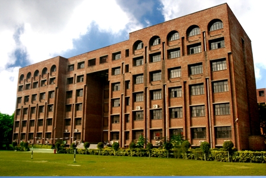

Inspired by the life and ideals of Maharaja Surajmal, a great Indian patriot and enlightened ruler of Bharatpur during the eighteenth century, Surajmal Memorial Education Society was established in 1972 and registered under Societies Registration Act 1860. The main aim of the Society is to disseminate quality education in the technical and professional areas, especially those beneficial to the students from rural and hitherto educationally deprived regions of our country.

To achieve these objectives, the Surajmal Memorial Education Society has established Maharaja Surajmal Institute at Janak Puri, New Delhi.
The membership of Surajmal Memorial Education Society is spread over all parts of India. However, the main component is from the states of Uttar Pradesh, Delhi, Haryana and Rajasthan.
Under the leadership and guidance of its President, Shri S.P.Singh, the Society looks forward to expand its educational programmes in the newly emerging areas and to serve as a participant in the efforts to develop appropriate human resources for the country’s development